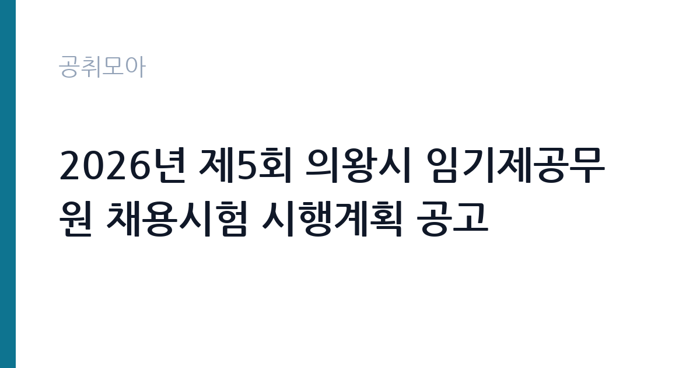

[지자체] 2026년 제5회 의왕시 임기제공무원 채용시험 시행계획 공고
경기도 의왕시 · 경기 · 마감 2026-10-08 (D-11) · 출처 나라일터

한눈에 보는 모집 조건
| 기관 | 경기도 의왕시 |
|---|---|
| 공고명 | 2026년 제5회 의왕시 임기제공무원 채용시험 시행계획 공고 |
| 고용형태 | 임기제 |
| 근무지 | 경기 |
| 게시일 | 2026-09-23 |
| 마감일 | 2026-10-08 (D-11) |
지원자격, 이렇게 읽으세요
- 지방의무사무관(일반임기제) 1명 지방시설주사(일반임기제) 1명 시간선택제
- 접수 ~2026-10-08 마감
- 세부 조건은 원문 공고문 확인
분야별 응시 자격이 다르므로 공고문의 분야별 자격 요건을 대조해야 합니다. 진료의사는 의사 면허 소지자가 대상이며 지방의무사무관(일반임기제)으로 선발합니다. 건축안전센터 전문 인력은 건축 분야 자격과 경력이 필요한 지방시설주사이며, 언론 홍보 전문 인력은 시간선택제 다급, 국가결핵관리 전담 인력은 시간선택제 라급, 공공도서관 운영 인력(중앙과 부곡 도서관 각 1명)은 시간선택제 마급입니다. 결격사유 해당자는 지원할 수 없으며 경력과 자격 증빙 서류는 접수 전에 준비하십시오.
이 공고의 포인트
이 공고의 특징은 한 번의 공고로 5개 분야를 뽑는다는 점입니다. 특히 공공도서관 운영 인력은 2명을 선발하므로 사서 자격 보유자에게 기회가 넓습니다. 시간선택제 임기제는 주 35시간 이하 근무로 육아와 학업을 병행하는 분에게 적합한 형태입니다. 건축안전과 언론 홍보, 결핵관리처럼 전문 경력을 살릴 수 있는 분야가 포함되어 경력직에게 유리합니다. 접수 기간이 사흘뿐이라 서류를 미리 갖춘 지원자가 유리한 공고입니다.
전형은 어떻게 진행되나
임기제 경력경쟁임용시험으로 서류전형과 면접시험을 거쳐 선발합니다. 접수는 10월 6일부터 10월 8일까지 의왕시청 총무과 인사팀 방문 접수 또는 등기우편 접수이며 문의처는 031-345-2123입니다. 우편 접수는 마감일 도착분 기준인 경우가 많으므로 10월 7일 이전에 발송하는 것이 안전합니다. 분야별로 전형 일정이 함께 안내되므로 본인 지원 분야의 서류전형 합격자 발표일을 공고문에서 확인하십시오.
원문에서 확인한 전형 방식
2026년 제5회 의왕시 임기제공무원 채용시험 시행계획 공고 ○ 모집분야 및 선발직급 - 진료의사: 1명 / 지방의무사무관(일반임기제) - 건축안전센터 전문 인력(건축 분야): 1명 / 지방시설주사(일반임기제) - 언론 홍보 전문 인력: 1명 / 시간선택제임기제 다급 - 국가결핵관리 사업 전담 인력: 1명 / 시간선택제임기제 라급 - 공공도서관 운영 인력(중앙, 부곡 도서관): 각 1명 / 시간선택제임기제 마급 ○ 고용형태: 임기제 ○ 접수기간: 2026년 10월 6일(화)~2026년 10월 8일(목) ○ 응시방법: 방문 또는 등기우편 접수 ○ 문의처: 의왕시청 총무과 인사팀(☎ 031-345-2123) ※ 기타 자세한 사항은 공고문을 확인하시기 바랍니다.
이런 분께 추천해요
- 사서 자격을 보유하고 공공도서관에서 근무하고 싶은 분께 적합합니다.
- 건축과 홍보, 보건 분야 전문 경력을 살려 시청에서 일하고 싶은 분께 잘 맞습니다.
- 시간선택제로 근무 시간을 조절하며 일하고 싶은 분께 좋습니다.
지원 전 체크리스트
- 본인 지원 분야의 직급과 근무 형태(전일제와 시간선택제)를 확인하셨습니까.
- 접수 기간이 10월 6일부터 8일까지 사흘뿐이라는 점을 확인하셨습니까.
- 분야별 자격과 경력 증빙 서류를 모두 준비하셨습니까.
- 우편 접수 시 마감일 도착 기준인지 공고문에서 확인하셨습니까.
모집 일정과 제출 타이밍
10월 6일 접수가 시작되어 10월 8일에 마감됩니다. 이후 분야별로 서류전형 합격자 발표와 면접시험, 최종합격자 발표 순으로 진행됩니다. 일정이 촉박하므로 접수 첫날인 10월 6일에 방문 접수하는 것을 권장합니다. 우편 접수자는 10월 7일 이전 발송과 등기 조회를 필수로 하십시오. 면접 일정은 분야마다 다를 수 있으니 서류전형 합격자 발표 공지를 반드시 확인하십시오.
직무 이해하기: 지자체
분야별 직무는 다음과 같습니다. 진료의사는 보건소 진료 업무를 맡으며, 건축안전센터 전문 인력은 건축물 안전 점검과 관련 행정 지원을 담당합니다. 언론 홍보 전문 인력은 시정 보도자료 작성과 언론 대응, 홍보 콘텐츠 제작을 맡습니다. 국가결핵관리 전담 인력은 결핵 환자 관리와 역학조사 지원을 수행하며, 공공도서관 운영 인력은 중앙과 부곡 도서관에서 도서 정리와 대출 반납, 이용자 안내와 독서 프로그램 운영 지원을 맡습니다. 각 분야 모두 시민 접점 업무이므로 책임감 있는 응대가 필요합니다.
자기소개서 작성 팁
자기소개서는 지원 분야에 맞춰 작성하십시오. 도서관 분야는 사서 실습과 독서 프로그램 경험을, 건축안전 분야는 점검과 감리 경험을, 홍보 분야는 보도자료와 콘텐츠 제작 실적을 구체적으로 적는 것이 좋습니다. 보건 분야는 환자 응대와 감염병 대응 경험을 부각하십시오. 의왕시 지원 동기는 시정 이해와 연결해서 한 문단으로 정리하면 설득력이 높아집니다.
면접 준비 포인트
면접에서는 분야별 실무 질문이 중심이 됩니다. 도서관 지원자는 이용자 민원 대응과 장서 관리 경험을, 건축 분야는 안전 점검 사례를, 홍보 분야는 위기 대응 보도 경험을 정리해 가십시오. 시간선택제 지원자는 근무 가능 시간과 요일을 명확히 말할 준비를 해야 합니다. 임기제 공무원으로서 계약 기간 안에 낼 성과를 구체적으로 제시하면 좋은 평가를 받을 수 있습니다.
급여·근무조건 읽는 법
원문에 보수 금액이 명시되어 있지 않으므로 공고문의 분야별 보수 항목에서 확인하셔야 합니다. 일반임기제와 시간선택제임기제는 지방공무원 보수규정의 임기제 연봉표에 따라 연봉이 책정되며, 시간선택제는 근무 시간에 비례해 지급됩니다. 정확한 연봉과 수당 구성은 공고문 원문에서 확인하십시오. 진료의사 등 전문 분야는 별도 보수 기준이 적용될 수 있으므로 해당 분야 지원자는 보수 조항을 꼼꼼히 읽어보시기 바랍니다.
자주 묻는 질문
- 5개 분야에 중복 지원할 수 있습니까?
지방자치단체 임기제 채용은 중복 지원을 제한하는 경우가 많으므로 공고문의 유의사항에서 확인하십시오. 가장 경쟁력 있는 한 분야에 집중하는 것이 일반적입니다. - 시간선택제임기제는 근무 시간이 어떻게 됩니까?
주 35시간 이하 범위에서 기관과 협의해 정하며 보수는 근무 시간에 비례해 지급됩니다. 정확한 근무 조건은 공고문 원문에서 확인하십시오. - 도서관 운영 인력은 사서 자격이 필요합니까?
도서관 분야는 사서 자격 보유자가 우대되거나 필수인 경우가 많습니다. 정확한 응시 자격은 공고문의 분야별 자격 요건에서 확인하십시오.
함께 보면 좋은 공고
[지자체] 2026년 제6회 부산광역시 북구 임기제공무원(기록물관리 전문요원) 채용시험 공고 — 마감 2026-10-13[지자체] 2026년도 제1회 해남군 시간선택제임기제공무원 경력경쟁채용시험 시행계획 재공고 — 마감 2026-10-08[지자체] 2026년 제1회 함안군의회 임기제공무원(정책지원관) 채용 공고 — 마감 2026-10-07출처: 나라일터 공개정보를 바탕으로 공취모아가 정리한 안내글입니다. 모집 조건·일정은 변경될 수 있으니 지원 전 반드시 원문 공고문을 확인하세요. 본 글은 정보 제공용이며 합격을 보장하지 않습니다.